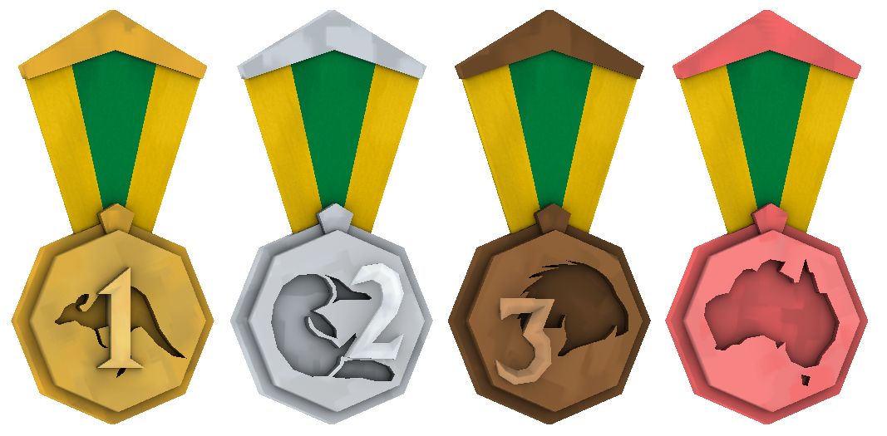
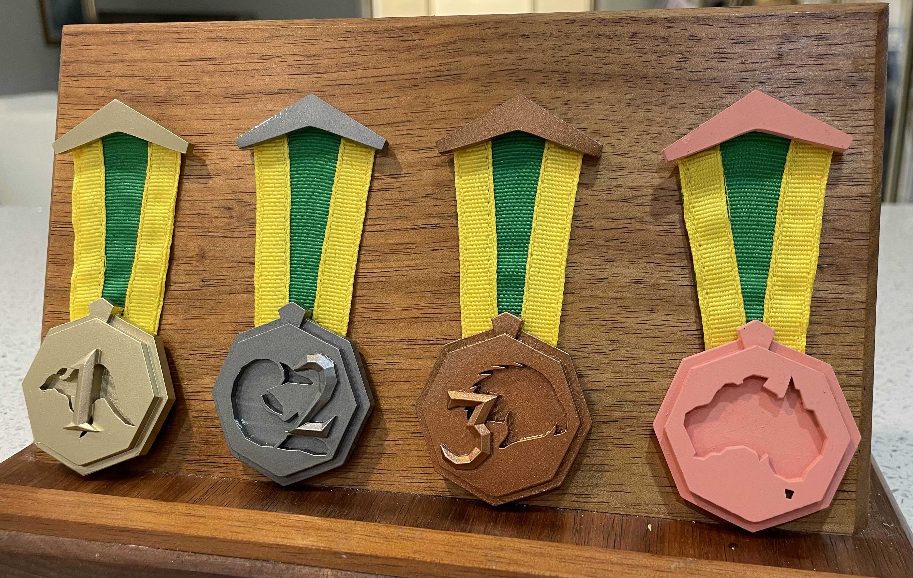

These are some medals by brother and I made for CappingTV's LAN Downunder back in 2018. They were modelled after Australian coins, but if I realize now that it would have been a lot more obvious if I hadn't made them all octagons! They were added to Team Fortress 2 and handed out to people who participated in the LAN. Actually, these models are still given out in Australian TF2 LANs to this day. When viewed in-game, they look nice and shiny.
Here is the official wiki page for them. We also made the Ultiduo medals earlier in 2017.

The medals were 3D printed by a member of the community and handed out as physical prizes in the 2025 Melbourne LAN for the first time! Exciting!
